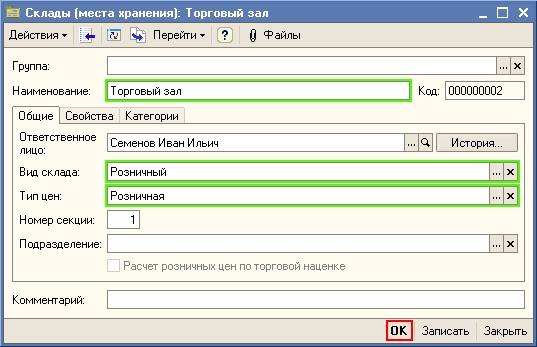
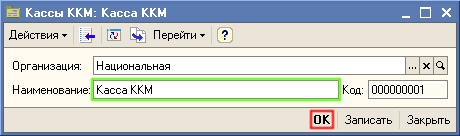
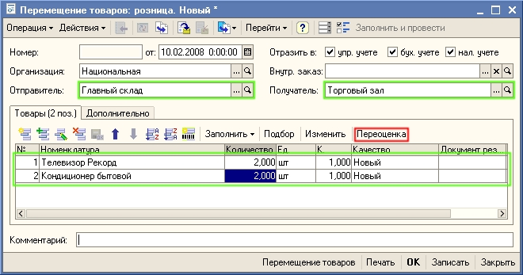
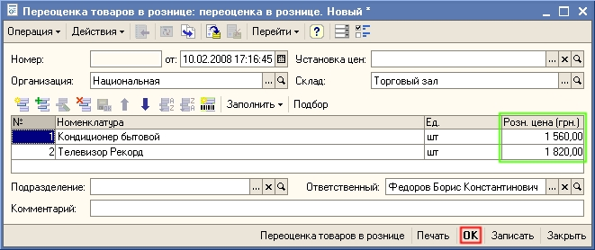
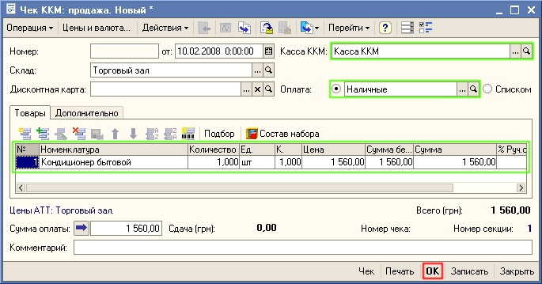
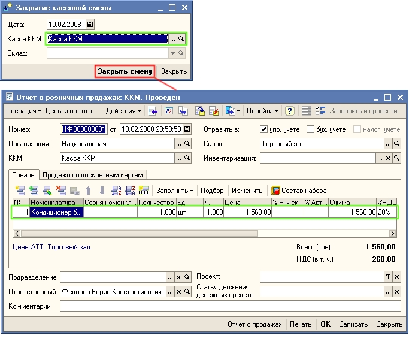
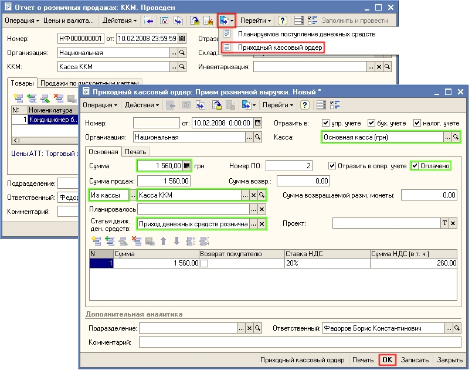

Продажа товаров в розницу обобщенному покупателю может производиться как с оптового, так и с розничного склада. Рассмотрим процесс продажи товаров с розничного склада обобщенному покупателю.
1. Введите в справочник Склады информацию о новом розничном складе (Торговый зал). Для этого откройте пункт меню Справочники - Предприятие - Склады (места хранения). В список складов введите информацию о новом складе, используя для добавления пиктограмму  . Заполните реквизиты в карточке склада так, как это показано на рисунке.
. Заполните реквизиты в карточке склада так, как это показано на рисунке.

2. В реквизите Тип цен - выберите тот тип цен, по которым будет осуществляться продажа товаров в розницу. Предварительно информация о значениях цен товаров, которые продаются в рознице должна быть зафиксирована в документе Установка цен номенклатуры.
3. Введите информацию о Кассе ККМ. Для этого откройте пункт меню Справочники - Денежные средства - Кассы ККМ. В список касс добавьте новую кассу, используя для добавления пиктограмму  . Введите в карточку кассы ККМ ее наименование, так как это показано на рисунке.
. Введите в карточку кассы ККМ ее наименование, так как это показано на рисунке.

Примечание. Касса ККМ - это фактически денежный ящик, куда поступают денежные средства от покупателей при оформлении розничных продаж через контрольно-кассовую машину (ККМ), подключенную в режиме фискального регистратора.
4. Оформите перемещение товаров с оптового склада (Главный склад) на розничный склад (Торговый зал). Для этого откройте пункт меню Документы - Запасы (склад) - Перемещение товаров. Введите информацию о новом документе Перемещение товаров, используя для добавления пиктограмму  . Заполните реквизиты документа так, как это показано на рисунке.
. Заполните реквизиты документа так, как это показано на рисунке.

Совет. При подборе товаров в документ используйте вариант подбора По остаткам и качеству номенклатуры , для того чтобы контролировать остатки товаров на складе-отправителе при перемещении товаров в торговый зал.
5. Для назначения новых розничных цен для продажи товаров в торговом зале нажмите на кнопку Переоценка. Будет создан новый документ Переоценка в рознице.

6. В документе уже заполнена вся информация о перемещаемых товарах и о тех розничных ценах, которые были назначены документом Установка цен номенклатуры. Нажмите на кнопку ОК и проведите документ Переоценка в рознице.
После проведения переоценки программа вернется в документ Перемещение товаров.
7. Нажмите на кнопку ОК и проведите документ Перемещение товаров. Товары будут перемещены со склада-отправителя (Главный склад) на склад-получатель (Торговый зал).
8. Введите новый документ Чек. Для этого откройте пункт меню Документы -Розница -Чек ККМ. Введите информацию о новом документе ЧекККМ, используя для добавления пиктограмму  . Заполните реквизиты документа так, как это показано на рисунке.
. Заполните реквизиты документа так, как это показано на рисунке.

Важно. При подборе товаров в документ можно использовать сканер штрихкодов. Предварительно сканер должен быть подключен (Сервис - Настройка торгового оборудования). Для оформления розничных продаж можно использовать более удобный интерфейс - Интерфейс кассира. Интерфейс кассира доступен для использования только в том случае, если к компьютеру реально подключена ККМ, работающая в режиме фискального регистратора.
9. Проведите документ Чек ККМ, нажав на кнопку ОК.
Примечание. Если к компьютеру подключена Касса ККМ, работающая в режиме фискального регистратора, то при проведении документа Чек ККМ, будет пробит кассовый чек на фискальном регистраторе.
Совет. Для того, чтобы информация о кассе ККМ и складе в документе Чек ККМ заполнялась автоматически, установите эти значения в качестве значений по умолчанию в настройках пользователя (пункт меню Сервис -Настройки пользователя - Основные значения для подстановки в документы и справочники).
10. В конце дня необходимо провести закрытие кассовой смены. Для проведения этой процедуры выберите пункт меню Документы -Розница - Закрытие кассовой смены. Нажмите на кнопку Закрыть смену. Будет автоматически сформирован и проведен документ Отчет о розничных продажах, в котором будет собрана информация о всех товарах, продажа которых была зафиксирована документами Чек ККМ.

Примечание. Если к компьютеру подключена Касса ККМ, работающая в режиме фискального регистратора, то при проведении документа Отчет о розничных продажах, будет автоматически выполнена процедура закрытия кассовой смены на фискальном регистраторе.
11. Теперь надо зафиксировать передачу денежной выручки из Кассы ККМ (денежного ящика контрольно-кассовой машины) в кассу предприятия. Для этого в форме документа Отчет о розничных продажах нажмите на кнопку  и выберите из списка документ Приходный ордер, так как это показано на рисунке.
и выберите из списка документ Приходный ордер, так как это показано на рисунке.

В документе уже заполнена вся информация. Нажмите на кнопку ОК и проведите документ. После проведения документа денежные средства (розничная выручка) поступят в основную кассу (Основная касса (грн)) торгового предприятия.
Следующий раздел: «Работа с неавтоматизированными торговыми точками (собственными магазинами)»